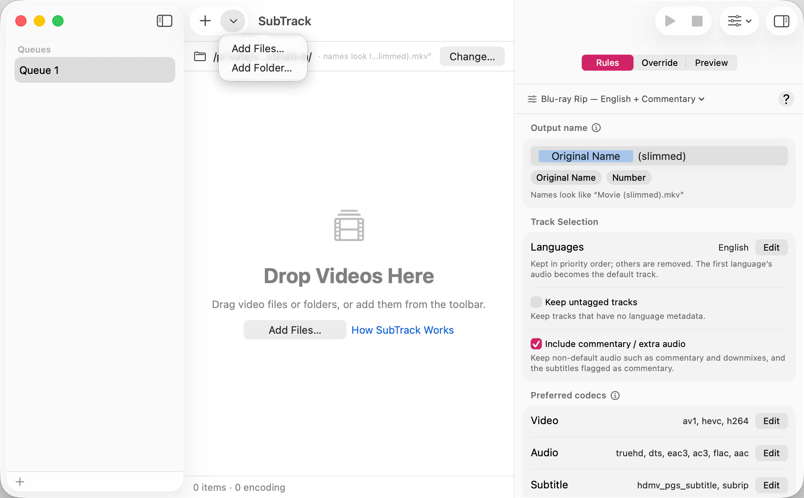

A queue is a list of files waiting to be slimmed, together with the rules that decide what each one keeps. You can add to it three ways.

SubTrack reads each file as it arrives to find out what’s inside — that’s the brief Inspecting state in the queue. Until that finishes it doesn’t yet know what the file will keep.
SubTrack searches the whole folder, including everything nested inside it, and queues every video it finds. A season of episodes in per-episode subfolders arrives in one gesture.
Dropping a large folder can take a moment; SubTrack shows its progress while it looks. Files it doesn’t recognize as video are skipped silently rather than queued and failed.
A queue is more than a list. Each one owns its own files, its own keep rules, its own preset, its own output folder, and its own naming — so a queue of foreign-language films and a queue of English TV rips can want completely different things without either disturbing the other.
Queues are restored exactly as you left them the next time you open SubTrack, including files that hadn’t run yet.
SubTrack remembers where each source file lives. If you move or delete one after queueing it, the row is marked as missing rather than failing partway through a run. See If the source file is missing.